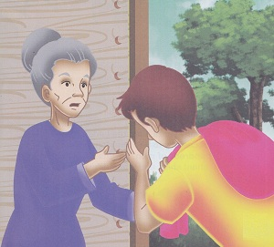
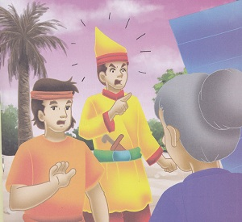
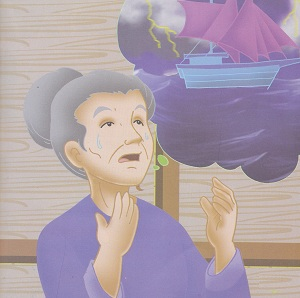
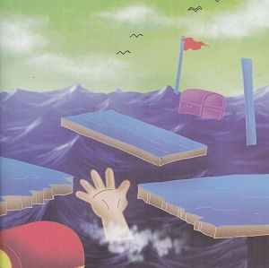

Si Lancang
( Cerita Rakyat Riau)
Pada zaman dahulu hiduplah seorang janda dan anaknya yang bernama Si Lancang. Tempat dimana mereka tinggal disebut daerah Kampar. Sehari-hari mereka hidup susah. Penghasilannya sebagai buruh tani sangat sedikit. Keadaan ini membuat si lancang berpikir untuk memperbaiki nasib dengan pergi merantau. 
Pada suatu hari, Si Lancang berangkat ke negeri orang. Si Lancang bekerja keras bertahun-tahun lamanya. Segala perjuangannya tidak sia-sia, ia berhasil mencapai cita-citanya menjadi orang kaya. Ia menjadi saudagar yang memiliki berpuluh-puluh kapal dagang. Akan tetapi, ia lupa ibunya yang miskin dan hidup menderita.
Suatu hari, Si Lancang singgah di Kampar. Berita kedatangan si Lancang terdengar oleh ibunya. Ibunya segera menghampiri Si lancang, Ia pun mengatakan “Engkau Lancang, Anakku! Oh... betapa rindunya hati emak padamu.” Mendengar sapaan itu, Si Lancang begitu tega mengingkari pengakuan ibunya sambil berteriak “Mana mungkin aku mempunyai ibu miskin seperti kamu. Usir perempuan gila ini!”
Dengan perasaan hancur berkeping-keping, ibunya pergi meninggalkan semua angan-angan tentang anaknya. Ia tidak menyangka Si Lancang akan setega itu tidak mengakui ibunya. Setibanya dirumah, ia pun berdoa dan berkata “Ya Tuhanku... hukumlah si anak durhaka itu.”
Tuhan mengabulkan permintaan ibu tua renta itu. Dalam sekejap, turunlah badai topan. Badai tersebut meluluhlantakkan kapal-kapal dagang milik Si Lancang beserta harta bendanya. 
Menurut cerita rakyat setempat, kain sutra melayang-layang dan jatuh menjadi negeri Lipat Kain yang terletak di Kampar Kiri, gongya terlempar ke Kampar Kanan dan menjadi sungai Ogong, sedangkan bendera kapal Si Lancang terlempar hingga sampai di sebuah danau yang diberi nama danau Si Lancang. Hingga sekarang, nama-nama tempat itu masih ada.